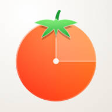

Pomodorodoro
One task. Full focus.
A calm Pomodoro timer with goals, streaks and stats — on iPhone, iPad and right in your Mac menu bar.
Одна задача. Полный фокус.
Спокойный помодоро-таймер с целями, сериями и статистикой — на iPhone, iPad и прямо в строке меню Mac.